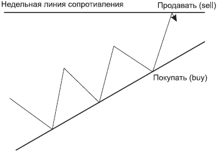
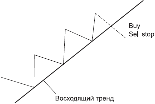

О тактиках форекса
«Быть иль не быть? Вот в чем вопрос...», или Тактики «замок», «усреднение», «добавление»
Тактику замка еще называют локированием. Что она собой представляет?
Положительный замокпоказан на рис. 7.1.

РИС. 7.1.Положительный замок
Допустим, вы встали в сделку и купили от трендовой дневной линии при восходящем движении. Цена идет в вашем направлении, дает вам прибыль. И вы наблюдаете, что она приближается, допустим, к недельной линии сопротивления. Помня о том, что недельные уровни старше, чем дневные, вы справедливо полагаете, что от этого уровня возможен отскок. По крайней мере, от линии сопротивления необходимо продавать. Это вы усвоили. Но вы уверены, что тренд еще не закончил свое восходящее движение. По крайней мере, разворот он пока не разрисовал. В этом случае, не закрывая сделку на покупку, вы можете выставить ордер на продажу. При этом важно отметить, что залоговая сумма, которая взималась с вашего депозита банком при вашей сделке на покупку, при открытии сделки на продажу остается неизменной. Например, пусть вы купили пару евро-доллар, залоговая сумма по этой паре на данный период составляет 1423 доллара, что отражается на вашем терминале. Теперь вы выставляете ордер на продажу по этой же валютной паре. Сделка открывается, а залоговая сумма, отраженная на вашем терминале, остается прежней – 1423. То есть для вашего депозита это не обременительно. Еще раз подчеркну, что залоговая сумма остается неизменной в том случае, если две противоположные (на покупку и продажу) сделки открыты по одной валютной паре.
Дальнейшие ваши действия заключаются в том, что вы, не обращая внимания на замок, действуете так, как будто планируете новую сделку.
• Если цена отскакивает от недельного уровня, вы ждете разворота в сторону восходящего движения и закрываете свои продажи, оставляя только покупки, – и ваша прибыль продолжает свой рост.
• Если цена пробивает недельный уровень сопротивления (ничто не вечно под луной – рано или поздно все уровни пробиваются), вы спокойно ждете, когда она вернется к этому уровню уже как к уровню поддержки, и закрываете свои продажи по нулям, а покупка продолжает свой рост. Лично я очень уважаю и люблю положительные замки. Они дают нам возможность безболезненно входить в сделки (если против тренда, то на отскоках) и пополнять свой депозит.
Есть еще так называемый отрицательный замок(рис. 7.2).

РИС. 7.2.Отрицательный замок
Что он собой представляет?
Допустим, вы встаете на покупку от восходящей трендовой линии, как учили. А цена вдруг вместо отскока от этой трендовой линии вверх, как прогнозировалось, пробивает эту линию вниз. В этом случае там, где вы по всем законам должны были бы ставить стоп-лосс, вы вместо этого ставите ордер на продажу. В данном случае этот ордер на пробитие линии поддержки заменяет стоп-лосс. Тогда вместо того, чтобы закрыть сделку с убытком, вы открываете противоположный ордер. То есть вы имеете два ордера: на покупку и на продажу. При этом залоговая сумма остается единой, как и в предыдущем случае. То есть на вашем депозите это никак не отражается.
Дальнейшие ваши действия заключаются в том, что вы как бы забываете, что у вас стоит замок, иначе вы начнете «притягивать факты за уши» и придумаете то, чего нет, раскрыв свой замок раньше, чем будет получен сигнал.
Итак, вы определяете ближайший уровень (в данном случае – уровень поддержки), справедливо полагая, что от поддержки последуют покупки. И в этом случае закрываете продажи и отпускаете покупки. Теоретически вам достаточно, чтобы цена отскочила на величину вашего замка. Если, допустим, разница между покупкой и продажей составляла 70 пунктов, цене достаточно пройти 70 пунктов, и ваш депозит будет сохранен. Можно также от поддержки добавиться на покупку. Эта тактика носит название усреднения.
? ВНИМАНИЕ
Когда вы встаете в замок, вы отменяете стоп-лоссы и тейк-профиты, поскольку замок уже подразумевает сохранение определенной дельты. Он дает вам возможность спокойно сориентироваться, потому что вы как бы фиксируете вашу прибыль или убытки в зависимости от того, какой вид замка вы используете. Если замок положительный, то ваша дельта со знаком плюс, если отрицательный – то ваша дельта со знаком минус (хотя странно ее так называть...).
Я не рекомендую вместо стоп-лосса выставлять отрицательный замок, хотя это, конечно, соблазнительно. Здесь нужен определенный опыт, чтобы не попасть под гипноз рынка и вовремя этот замок раскрыть.
Однако вернемся к тактикам. Смысл тактики усреднения состоит в том, чтобы от поддержки выставить еще одну сделку на покупку. В этом случае у вас будут открыты две покупки, одна снизу и одна сверху от поддержки. В результате, когда цена будет где-то на середине пути вверх, по нижней покупке у вас будет плюс, а по верхней покупке точно такая же цифра, но со знаком минус, и в терминале отразится ноль. То есть депозит сохранен, можно закрывать сделку и начинать анализировать...
Разберем еще одну тактику, которая носит название добавления.
Что представляет собой эта тактика?
Допустим, вы выставили сделку. Купили от трендовой линии (а может, продали от нее, если тренд нисходящий). Цена идет в вашу сторону. Прибыль растет. Настроение улучшается. Но чаще всего после определенного движения цена идет на коррекцию. Мы с вами это уже обсуждали. Вы можете встать в положительный замок. Или не вставать. Это ваше личное дело. Но когда цена придет к линии поддержки, что бы вы сделали, если бы у вас не была уже открыта сделка на покупку? Правильно, вы бы купили (конечно, не бездумно, а оценив ситуацию на рынке и сверившись со своим бизнес-планом). И в этом случае, если покупки не противоречат вашим планам, можно добавить еще один ордер на покупку. В результате у вас будут открыты два ордера на покупку: один снизу, другой с середины. В этом случае ваша прибыль начнет расти удвоенными темпами.
? ЧТО ЛУЧШЕ?
(из цикла «Невыдуманные истории»)
Инна, трейдер, мы с ней давно работаем. Сидит, о чем-то задумавшись. «Инн, о чем задумалась?» Она, со вздохом: «Знаешь, я поняла! Стоп-лосс – это быстрая смерть, а замок – медленная. Вот и думаю... Не знаю, что лучше...»
И это правда. «Словив лося», вы, погоревав и проанализировав ситуацию, снова готовы к работе. А когда вы стоите в отрицательном замке, вы в постоянном напряжении, выбирая, когда его раскрывать, и малейшее движение не в вашу сторону воспринимается как катастрофа. Это очень сложно. Кроме всего, вы вынуждены отметать те реальные сделки, которые вам предлагает рынок. Вы зациклены на одной валютной паре. А ведь могли бы заработать на других сделках.
? ПОМОГИТЕ ЗАКРЫТЬ ЗАМОК...
(из цикла «Невыдуманные истории»)
Женя, новичок, влез в замок. Долго пытался его разрулить... Но каждый раз, когда его раскрывал, цена начинала движение и шла против него. Потом, правда, оказывалось, что цена шла в нужную ему сторону, но нервы были на пределе, поэтому он пугался и снова ставил замок. Пытались с ним анализировать ситуацию, составляли бизнес-планы, но каждый раз он впадал буквально в ступор, если цена проходила против него хотя бы 20 пунктов. Измученный долгим стоянием в замке, раздув его до нереальных размеров, он сидит, тупо уставившись в монитор. Мимо проходит довольный трейдер. «Как дела?» – спрашивает у Жени. Тот поднимает на него очумелый взгляд, и с надеждой: «Слушай, помоги закрыть замок!» (он, конечно, имел в виду «разрулить»). Добрый трейдер говорит: «Да не вопрос!» Вызывает ордер, открывает заявку на закрытие перекрытых ордеров и нажимает клавишу... Женя не успел даже охнуть... Замок закрыт. Немая сцена, как в «Ревизоре».
На самом деле Женя потом признавался, что испытал невероятное облегчение, избавившись от этой сделки. Но это потом, а сначала...
? ЛЕВИН ЗАМОК
(из цикла» Невыдуманные истории»)
Лева – один из самых успешных трейдеров. Рассказывает мне о том, как он сделал первую сделку. «Представляешь, только-только открыл счет. Руки чешутся! Прихожу с утра. И сразу встаю на пару евро-канадец, хотя на демосчете ни разу ее даже не рассматривал. А тут сразу на нее, а она не в ту сторону пошла. Я в замок. Потом оказалось, что я купил у сопротивления, а продал у поддержки. Все с точностью до наоборот. Неделю пытался разрулить, а она все ходила от моей поддержки к моему сопротивлению. Сто раз мог раскрыть... В итоге весь измучился. Плюнул. Закрыл сделку с минусом. И ушел на неделю в отпуск – нервы поправлять».
? ЛЕКАРСТВО ОТ ДЕПРЕССИИ, ИЛИ НЕ ВПАДАЙТЕ В МАРАЗМ
(из цикла «Невыдуманные истории»)
Как-то в Вене я познакомилась с одной русской эмигранткой, Джульеттой, которая 40 лет назад вышла замуж за иностранца и уехала в Австрию. Теперь работает гидом. Профессию свою обожает. Очень много и интересно рассказывала нам об исторических местах, завидовала, что в Вене нет таких великолепных дворцов, как в Петербурге, которым она искренне восхищалась. И как-то раз посетовала, что жизнь в Австрии настолько размеренная и спокойная, что люди подвержены депрессиям. Поэтому, по ее мнению, большой процент самоубийств. «А как же вы?» – спросила я. «Сорок лет в депрессии», – со вздохом ответила Джульетта. После этой поездки, когда из Европы приходили новости о наводнениях и других катаклизмах, мы с друзьями, как это ни кощунственно звучит, радовались: «Слава Богу, их хоть немного депрессия отпустит». Ведь известно, что адреналин в крови препятствует возникновению депрессий. Вспомнила я эту поездку не случайно.
Видимо, депрессия штука заразная. Ничем другим я не могу объяснить, почему одновременно пять человек из дилинга встали в сделки по фунт-иене. А эта валютная пара в определенных трейдерских кругах известна как антидеприссант. Ведь открыв сделку по ней, ты можешь забыть обо всем, что тебя мучило до этого... Смысл жизни, неразделенная любовь, переоценка ценностей и т. д. и т. п. – все уходит на второй план. Потому что ты в рынке всегда. Днем, ночью, утром, вечером. Она может пролететь 400 пунктов в одну сторону, и ты расслабляешься, ожидая дальнейшего движения. Но именно в этот момент эта валютная пара вдруг резко корректируется в другую сторону, причем с еще большей резвостью. И тебе приходится решать, то ли срочно становиться в положительный замок, то ли закрывать сделку с тем, что есть, то ли ставить стоп-лосс по цене открытия, а потом искать возможность снова открыть сделку в прежнем направлении, потому что стоп-лосс, скорее всего, закроет сделку. «И вечный бой, покой нам только снится» – это ее девиз... Фунт-иена – девушка, безусловно, интересная, но и капризная. И ревнивая... Требует, чтобы ты постоянно держал ушки на макушке. Лекарство от депрессии, одним словом. И вот именно по этой паре пять трейдеров встали в сделки. Причем это не было стадным чувством, потому что трое из пяти в момент совершения сделки находились дома, ни с кем не советовались и до момента входа в сделку ни с кем это не обсуждали. То есть рынок сигнализировал о своей готовности совершить поход вниз и предложил поучаствовать в нем. Его сигналы были замечены, и понеслось... Сначала рынок дал заработать, а потом начал разворот наверх. Но после продажи перестроиться на покупку как-то сложно. Срабатывает стереотип мышления. Пять трейдеров дружно противостояли восхождению этой валютной пары, упорно продавая ее и вставая в отрицательные замки. Тренд был восходящий, но эти смелые ребята старательно этого не замечали. И в каждой коррекции упорно видели начало нового нисходящего движения, предвкушая лавры победителей. А как известно, победители получают все. Упорство – оно, конечно, вызывает уважение. Но когда оно граничит с упертостью и нежеланием видеть реальное положение вещей, это начинает напоминать борьбу с ветряными мельницами. Вы, надеюсь, помните, как называли Дон Кихота? Когда кто-нибудь из них подходил ко мне со своими доводами в пользу продажи, я неизменно задавала только один вопрос: «Направление тренда?» Восходящее!.. Вопросов больше нет!.. Однако создавалось такое впечатление, что эти пятеро смелых, приводя доводы, старались не только убедить друг друга в правильности своего умозаключения, но и заполучить как можно больше сторонников. Вероятно, на тот момент им казалось, что чем больше людей начнут эту пару продавать, тем быстрее она развернется. Организовался клуб любителей фунт-иены. Ребята поделили дежурства ночью. Кто-то спал, кто-то бодрствовал, чтобы в случае необходимости подать сигнал всей пятерке. Как в книге «Тимур и его команда». Доводы в пользу продаж начали граничить с каким-то маразмом. Я помню, как ко мне подошел Сергей, между прочим, очень толковый человек, и на полном серьезе начал объяснять, что иена очень реагирует на... фазы луны. Он перелопатил историю за несколько лет и вывел закономерность. Типа, когда луна убывает, то иена начинает рост, а когда луна растущая, то иена ослабевает. Или наоборот, я точно не помню. «Сереж, – говорю я ему, – а почему только иена так реагирует, а другие валюты?» – «А японцы более чувствительные», – не моргнув глазом и не усомнившись, ответил он. Пытаясь воззвать к здравому смыслу, подхожу к еще одному из этой пятерки и со смехом пересказываю ему разговор с Сергеем. На что Олег (так его зовут) мне говорит: «Да, я знаю. Я тут с одним парнем познакомился. Он в Америке живет и торгует. По скайпу с ним разговорился. Когда я ему рассказал теорию Сергея, он удивился, что мы только что об этом узнали, – они так всегда торгуют... по лунному календарю.» А я еще смеялась рассказам Михаила Задорнова. Думала, что придумывает.
Прихожу как-то утром в дилинг и вижу, что пальма, которая стояла в углу у стола, отсутствует. «Куда цветок дели?» – спрашиваю ребят. Помявшись, мне, наконец, выдают ответ. Дескать, он несчастливый. «В каком смысле несчастливый?» – удивляюсь я. «В прямом, – отвечает Антон. – Когда его не было, фунт-иена шла вниз, а когда его перенесли к нам, все изменилось».
Короче, фэн-шуй пошел в ход... Пытаюсь шутить: «А может, имеет смысл захватить заложников и не отпускать их, пока не начнутся масштабные продажи? А если не прислушаются к вашим требованиям, пригрозить расстрелом?» Ребята шуток уже не воспринимали. Я понимаю, что нервы на пределе. Это был очень долгий марафон. В итоге не все дошли до финиша. Не всякий депозит выдержит такие походы... Тем более свопы на продаже отрицательные (своп взимается за перенос позиции с одного дня на другой). Если бы они видели свою цель, но они видели только туман... (помните рассказ про Флоренс Чадвик из главы 2?).
Этот рассказ призван лишний раз напомнить: не стоит быть твердолобым. Рынок – он никакой. Не злой, не добрый. Он не будет вас жалеть. И его не надо любить, его надо изучать. И стараться отстраненно наблюдать. Непредвзято. И ориентироваться не на фазы луны, а на тренды.
? ВДОГОНКУ...
(из цикла «Невыдуманные истории»)
Как-то разговорилась с ученицей. Расспрашиваю о ее торговом плане. Мнется. Не знает. Говорю ей: «Нет смысла входить в сделку, если не знаете, что ожидаете». Она мне уверенно: «А я знаю, что заработаю» – и потом, вдруг решившись, добавляет: «Я сегодня выходила в астрал, меня там настроили на успех, все получится...» – я опешила. Помолчала, переваривая информацию. Потом задаю вопрос: «А прошлый раз, когда сработал стоп-лосс, вы выходили перед сделкой в астрал?» – «Выходила», – признается она мне. «Ну и?..» – «Тогда я к этому несерьезно отнеслась», – отвечает... «А сегодня все получится» – как заклинание, повторила она.
Эта женщина – не городская сумасшедшая. Уверяю вас, это вполне нормальный человек, питающий надежды на чудо. Но вы, уважаемый читатель, решайте сами, что вы хотите для себя. Чудо, оно на то и чудо, что случается редко. Не зря же есть такая пословица: «На Бога надейся, а сам не плошай».